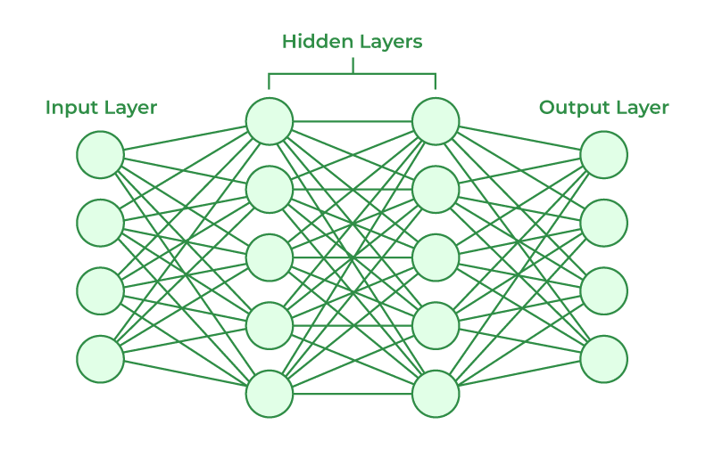

Paul Sherer
Engineering Director
Artificial Intelligence
Any technique that enables computers to mimic human intelligence, using logic, if-then rules, decision trees, and machine learning.
Initial development started ~ 1950s
Machine Learning
A subset of AI that includes statistical techniques that enable machines to improve at tasks with experience. Ability to learn without being explicitly programmed.
Supervised Learning
Supervised Learning input is provided as a labelled dataset, a model can learn from it ot provide th result of the problem easily
Unsupervised Learning
No complete and clean labelled dataset. Self-organized learning. Main objective to explore the underlying patterns and predict the output.
Reinforcement Learning
Trains software to make decisions to achieve the most optimal results. It mimics the trial-and-error learning process that humans use to achieve their goals.
Deep Learning
The subset of Machine Learning composed of algorithms that permit software to train itself to perform tasks, like speech and image recognition, by exposing multilayered neural networks to vast amounts of data. Learning based on Deep Neural Network.
Neural Network

Training models
input → program → results
inputs & weights → model → results → loss (how good are results)
input -> modal -> results
Building 'intelligent' software
Depth First Search
Go deep
Uninformed
Breadth First Search
Go Wide
Uninformed
A* Search
Expands node with loweest value of g(n) + h(n)
g(n): Cost to reach node
h(n): Estimated cost to goal
What should 'o' do next?
Adversarial Search
Minimax
Recursive algorithm for choosing the next move in an n-player game, usually a two-player game
How can you be productive with ML today?
Tooling
- PyTorch:
- Created by Facebook in 2016
- Tensorflow has been dying since 2018
- Majority of research projects have switched to using PyTorch, meaning that a lot of the newer algorithms used will be made available as part of that library.
- FastAI
- Built on top of PyTorch
Build an image classifier